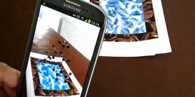
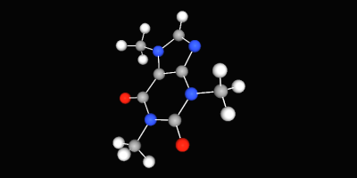
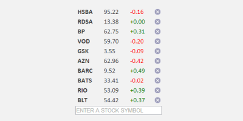

An augmented reality mobile app with 3D molecule structures. It's implemented for Android devices using the Wikitude SDK. Most of the code should equally be as applicable to an iOS app through the magic of PhoneGap.

3D molecule structure visualisation with three.js. This is a work in progress. I hope to eventually be able to search for a compound and have it determine and render its 3D representation. For now you can enjoy a spinning 3D caffeine molecule!
Some experimental music visualisers created in the browser by making use of the Web Audio API and its real-time analysis capabilities. You can see a couple of examples of the visualisers on this page, (I may come back and add some more), or read the blog post to find out more about how they work.
Donec id elit non mi porta gravida at eget metus. Fusce dapibus, tellus ac cursus commodo, tortor mauris condimentum nibh, ut fermentum massa justo sit amet risus. Etiam porta sem malesuada magna mollis euismod. Donec sed odio dui.

Donec id elit non mi porta gravida at eget metus. Fusce dapibus, tellus ac cursus commodo, tortor mauris condimentum nibh, ut fermentum massa justo sit amet risus. Etiam porta sem malesuada magna mollis euismod. Donec sed odio dui.
Donec id elit non mi porta gravida at eget metus. Fusce dapibus, tellus ac cursus commodo, tortor mauris condimentum nibh, ut fermentum massa justo sit amet risus. Etiam porta sem malesuada magna mollis euismod. Donec sed odio dui.
I work as a Software Developer at Nonlinear Dynamics Limited, a developer of proteomics and metabolomics software.
My day job mainly involves developing Windows desktop applications with C# .NET.
My hobby/spare-time development tends to focus on playing around with some different technologies (which, at the minute seems to be web application development with JavaScript).
It’s this hobby/spare-time development that you’re most likely to read about here.
Ian Reah